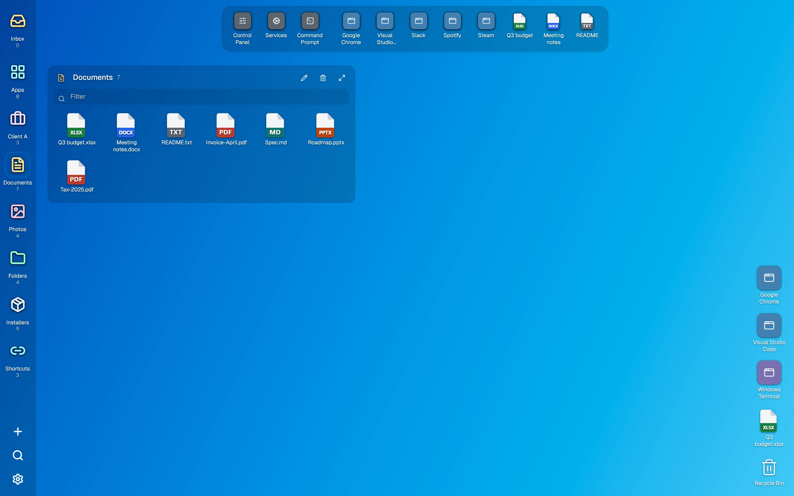
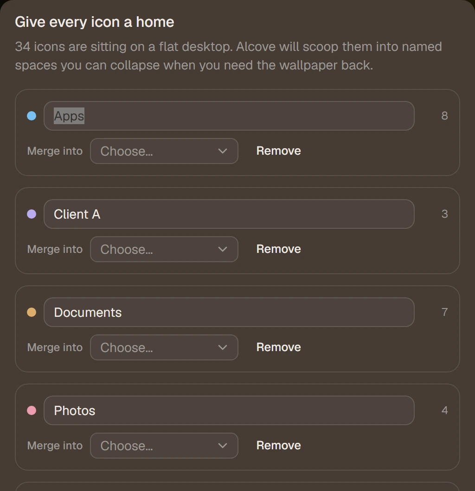
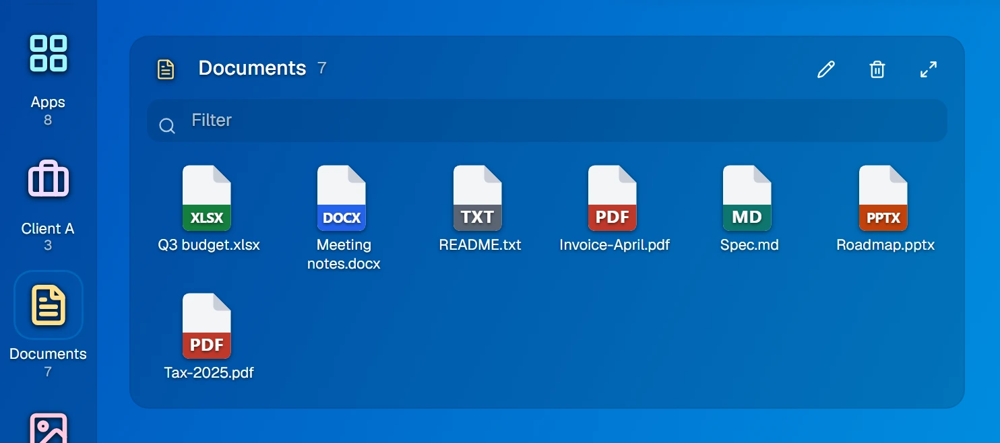
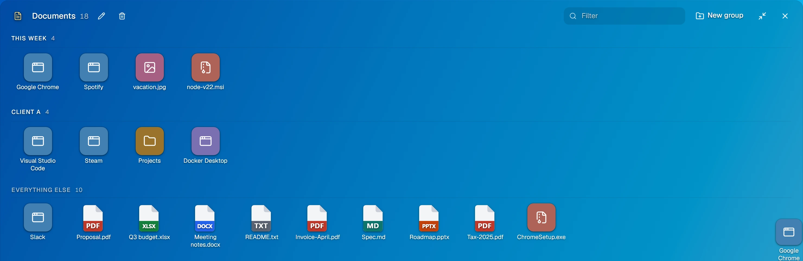
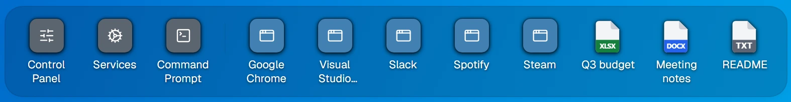
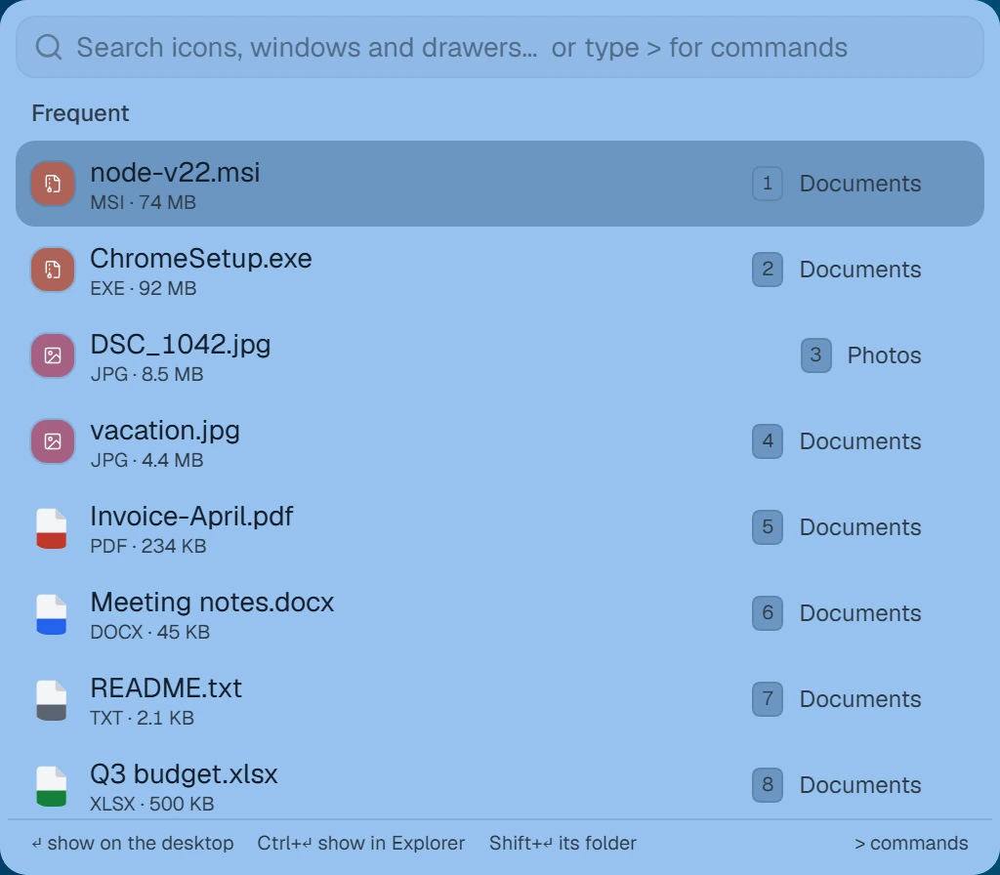

Alcove · Windows desktop organizer
Give every icon a home.
Your Desktop is where files go to be forgotten. Alcove replaces that loose grid with named drawers — Alcoves — that open one at a time, spread into a full canvas when they grow, and keep their own arrangement on every monitor. It reads the real files on your Windows Desktop and opens them with the real Windows shell. Nothing is copied or moved unless you move it.

What it does
An organizer, not a replacement.
Alcove draws itself onto the desktop in place of Explorer's icon grid. Everything else about Windows keeps working exactly as it did.
It sorts what is already there
On first run Alcove reads your Desktop and files it into Apps, Documents, Photos, Folders and Installers — or starts with one empty Inbox and lets you file things yourself. The Inbox catches everything afterwards: new files landing on the Desktop, and anything you drag back onto empty wallpaper.

One drawer open at a time
Click a tile in the rail to open a drawer, click it again to close. Opening another closes the first, so the wallpaper stays clear the rest of the time. Each tile carries the drawer's name, its item count and how much disk space it holds — the heaviest drawer is tinted when it clearly outweighs the rest.

Grows into a canvas, not across the wallpaper
A small drawer opens as a compact panel. Past twelve items it opens spread across the desktop instead, where you can make named rows and drag icons between them. You can force either shape from the drawer header, and the layout is remembered.

A strip that fills itself
The frequent strip along the top or bottom edge holds what you actually open — you never fill it. Scores halve every two weeks so old habits fade, and a newcomer has to beat the weakest slot by half again before it takes the place. Items hold their position as ranks shift, so nothing slides out from under your cursor mid-click. Nail one down with Keep in this slot, or ban one for good.

Search
Ctrl Space from anywhere in Windows
A standalone search window, open even when Alcove is behind other apps. Before you type it shows two short lists: Today — the files you have changed since midnight — and Frequent, what you open most. Press 1–9 to open one without touching the mouse.
Once you type, results rank by how often you actually open something, not just how well the name matches. Something you use daily wins a close call — but a weak match never beats a strong one, however often you open it.

Good behaviour
It stays a Windows citizen.
A desktop shell that breaks the rest of the machine is not worth the tidier wallpaper.
- Real files, real shell. Alcove reads your actual Desktop folder and opens files with their normal Windows associations.
- A drawer can mirror a real folder. Point one at Downloads or a project directory and it shows that folder's live contents — icon, list and details views, sortable columns, Backspace to go back up. The folder, not a copy of it.
- The taskbar keeps working. Running apps stay where they always were.
- The Recycle Bin is the Recycle Bin. Right-clicking it gives you Windows' own menu, not ours.
- Every monitor gets its own desk. Drawers belong to a screen and can be dragged to another; layouts save per desk.
- Nothing moves unless you move it. Filing an icon into a drawer is Alcove's bookkeeping, not a file operation.
- One file holds your setup. Layout, drawers and pins live in
%APPDATA%\com.alcove.desktop\desktop.json. Delete it and you are back to a fresh desktop. - An emergency exit. Ctrl+Shift+F12 hands the desktop straight back to Explorer, whatever else is going on.
- No account, no telemetry. Alcove works with the network unplugged; the only thing it ever asks the internet is whether a newer build exists.
Built for the keyboard
The shortcuts worth knowing.
| Ctrl+Space | Open search — from anywhere in Windows, even when Alcove is behind other apps |
| Ctrl+F | Search within Alcove |
| Ctrl+N | New Alcove |
| Ctrl+Shift+H | Collapse every drawer |
| Ctrl+V | Paste clipboard files into the open drawer's folder, or onto the Desktop |
| Enter / Delete | Open the selection, or send it to the Recycle Bin |
| Backspace | Go up a level in a drilled-into folder |
| Ctrl+Shift+F12 | Emergency release — hand the desktop back to Explorer |
Double-click the wallpaper for a new Alcove. Drag an icon onto a drawer to file it, onto the corner pins to freeze it in place, onto empty wallpaper to send it back to the Inbox — or onto an app in the frequent strip to open it with that app instead of its usual one.
Licence
Free and complete. A licence buys updates.
Alcove starts with Windows and is your desktop. Something that asks for money every morning is what bundled junk does — so Alcove does not.
Complete without a key
Every feature, every monitor, no time limit, no nag at startup, on as many machines as you like. You do not need a licence key to use Alcove.
A key buys newer versions
A licence covers updates for the period it names. When it lapses your copy keeps working forever, in full — you just stop being offered newer builds.
Nothing that can lock you out
Keys verify offline against a public key built into the app. No activation server, nothing to revoke, no check that can fail on a bad day.
The source is published so you can read it, learn from it, check what it does to your machine, and build it for yourself. Alcove is not open source: redistributing builds is the one thing the licence does not allow. Updates are signed and the app refuses anything that does not verify.
Status
Alcove is in early development.
The first build lands here as a current-user installer — no admin rights, Start menu entry, optional start at sign-in, and it updates itself from then on. Leave a line and you will hear when it is ready.
Windows 10 and 11 · 64-bit · no account required